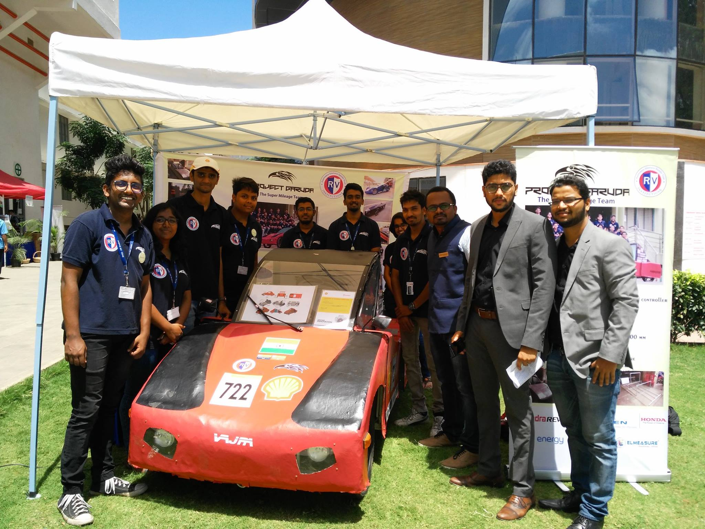
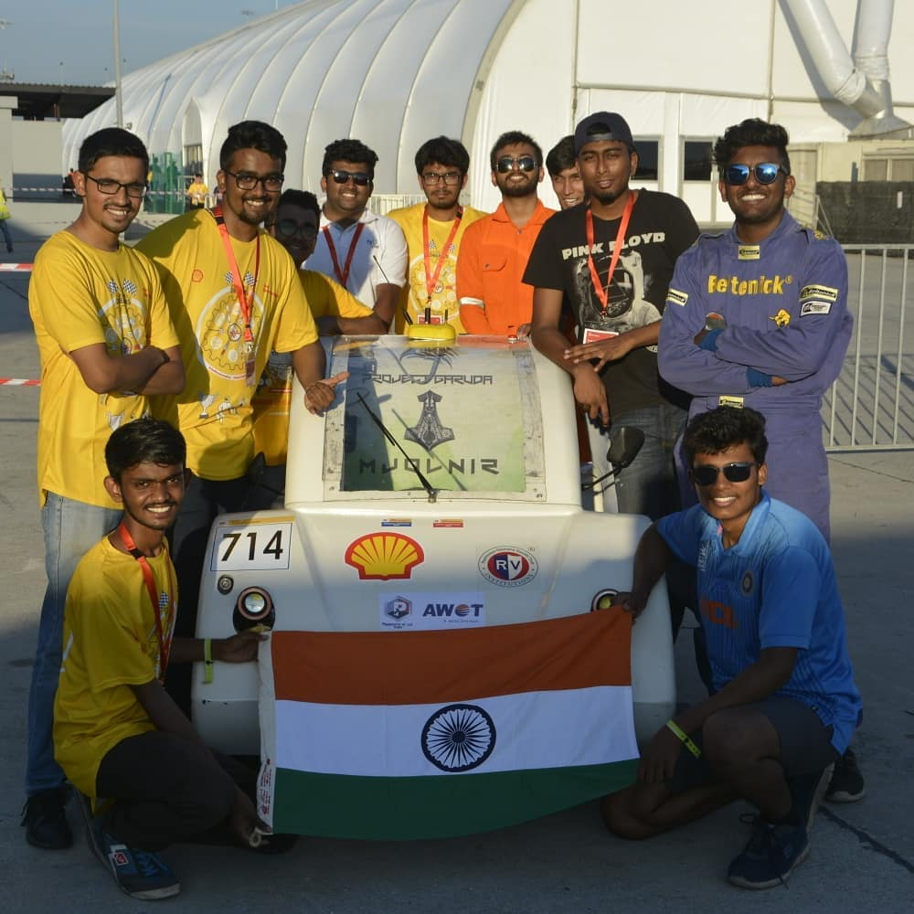
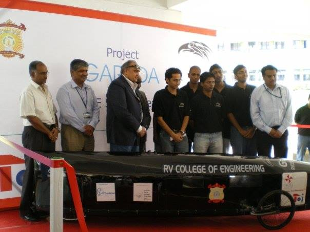
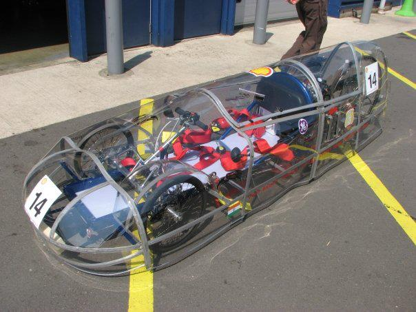
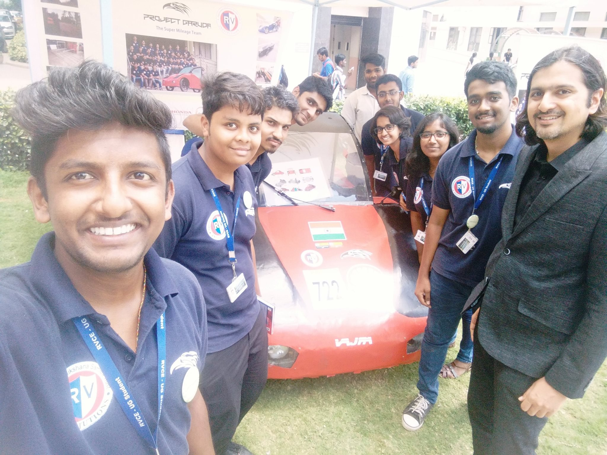
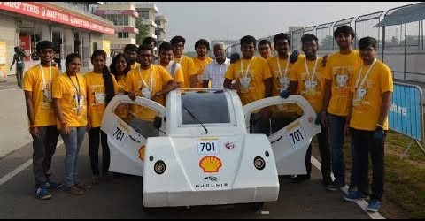

About Garuda.
Eleven cars since 2006, built to go further on less energy.

Mission.
Super-mileage racing asks one question: how far can a car go on the least energy? Answering it takes mechanical, electrical, software and management working as one team.
Based at RVCE, Bengaluru, the team has raced at Shell Eco-marathon Asia for over a decade. Today’s cars are battery-electric Urban Concepts.
Timeline.
-
2006
Foundation
India’s first student super-mileage team is founded at RVCE.
-
2008
Debut prototype: Black Coffin
The first car: 55 kg, a 97 cc petrol engine, and 180 km/L in a road test in Bengaluru. Wins the Rotary Young Achiever Award.

-
2009
International debut: Shell Eco-marathon UK
Races at Rockingham, UK, and wins the “Perseverance in the Face of Adversity” award.

-
2010 to 2011
Mileage climbs
New petrol prototypes each year: 330 km/L at Shell Eco-marathon UK, then 380 km/L at Shell Eco-marathon Asia, Sepang.
-
2012
First electric prototype
Two cars at Sepang, one petrol and one electric. The electric prototype places 14th in its class, the only Indian team to finish, in a field of 119 teams.
-
2016
Agni
A petrol UrbanConcept cut to 147 kg, run at Shell Eco-marathon Asia in Manila at 66 km/L.
-
2018
Electric era begins: Vajra
Vajra: a battery-electric UrbanConcept with a 1 kW motor, a 48 V lithium-ion pack, an aluminium chassis and a carbon-fibre body.
EV transition

-
2019
Mjolnir at Shell Eco-marathon Asia
A lighter successor to Vajra. At Sepang it was India’s only battery-electric UrbanConcept and cleared every technical and safety check, in a field of 108 teams.

-
2024 to 2026
Research forward
Electric drives, battery management and lightweight composites, for the next international event.